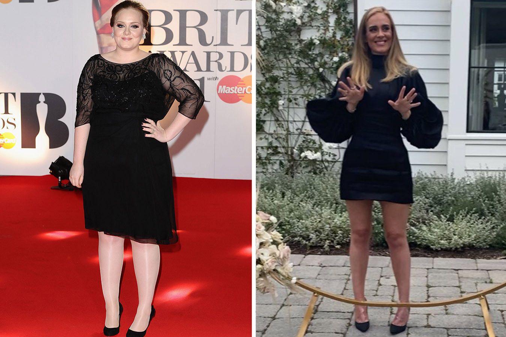

En 2018, Carlota Corredera ha asombrado a la sociedad ¡al haber perdido 60 kilos! Ahora Carlota continúa siguiendo el programa de perdida de peso.
Primeramente, después de adelgazar tanto, la presentadora no decía las razones verdaderas de perder tantos kilos, solo hablaba de una dieta especial. Pero Carlota ha confesado a nuestro periodista y ha contado la razón verdadera de su adelgazamiento. En este artículo se escribe toda la historia de Carlota: cómo ella adelgazó, pero luego ganó de peso otra vez, y ¡cómo ella ha vuelto al peso y el cuerpo sanos hoy!

La historia del peso exceso
A la razón de peso exceso su carrera iba mal, los kilos de más le impedían desarrollarse, las reseñas empezaban a ser más y más negativas, con consejos de ¡«perder peso o dejar el trabajo»!
El punto de cambio de la historia de peso exceso fue el embarazo de la presentadora. Aun planeando el embarazo, Carlota encaró el problema de ganar mucho peso.
Con el embarazo la situación se empeoró. Carlota vestía la talla 60, ¡y pesaba 128 kilos! Luego Carlota dijo a los periodistas, que los problemas de pesar mucho ella ya tenía de adolescente, la representadora no podía superar la muerte de su padre y se consolaba con la comida. Ella parecía una chica joven y alegre, pero tenía muchos complejos por dentro. Después de tener su primogénito, tenía que meter su cuerpo en forma.
Pasaba todo el tiempo libre haciendo ejercicios agotadores en el gimnasio, consultaba con un nutricionista, y ¡logró perder los 60 kilos! Ella logró el peso ideal con muchos fuerzos y dolores, luego publicó su libro «Tú también puedes: cómo conseguí perder 60 kilos y ganar salud», que fue el hit de ventas en Europa.
Volver a problemas
Los terapéutas confirman que el peso exceso nunca se va para siempre y en el 75% de los casos vuelve cuando las personas pierden su motivación. Eso fue que pasó a Carlota. En unos años ella no solo ganó todos los kilos perdidos ¡sino también ganó 13 kilos más!
La gente ya no creía a ella y a sus libros, y las reseñas eran muy negativas de ella y de su trabajo. Los espectadores querían que ella se fuera por volver a parecer una mujer no sexual. Las ventas de sus libros se bajaron, cuando Carlota dejó de ocultar sus problemas de peso exceso. Ya nadie quería creer en el programa miracoloso escrito por una mujer que no logró obtener un cuerpo ideal.
A un paso de la muerte
En 2016, a Carlota diagnosticaron la obesidad del primer grado con un alto riesgo de las enfermedades cardiovasculares.
Primero Carlota ayunaba, luego volvía a comer mucho y se odiaba.
Deporte, altas cargas, y ejercicios agotadores no le hacían bien, y no daban ningunos resultados. Carlota necesitaba un método potente de perder peso.
Carlota se dirigió a un cirujano de liposucción, al mejor especialista en su campo en aquel entonces. Ella decidió operarse, pero después de todos los analisis era claro que existían muchos riesgos de perder la vida.
En cambio, el cirujano le prescribió Reduslim, que era en aquel entonces una novedad en el mercado español entre los fármacos para curar la obesidad sin operarse.
Camino a la vida sana
Los primeros resultados aparecieron en la primera semana del uso. ¡La figura empezó a cambiarse! Reduslim aceleró muy rápido el metabolismo de Carlota y empezó a quemar las grasas. ¡Los primeros éxistos asombraron a los espectadores! Muchos se interesaron ¡cómo ella consiguió adelgazar!
Reduslim para perder peso. Ayuda a perder peso exceso en corto plazo sin consecuencias graves para el cuerpo. No es un medicamento. Es un complemento alimentario biológico.
Reduslim para perder peso es un fármaco potente que quema grasas y garantiza:
- eliminar los depósitos de grasas.
- normalizar el metabolismo.
- normalizar el apetito.
- reitrar el colesterol «malo» y los radicales libres del cuerpo.
- eliminar hinchazones y prevenirlos.
- acelerar la digestión.
- hacer la piel elástica al renovar las células.
- prevenir los nuevos depósitos de grasas.
No es obligatorio tomárselo siempre, basta hacer un curso ¡para obtener el peso ideal para siempre!
Se puede pedir el fármaco solo en el sitio oficial ¡para evitar los falsos y garantizar el efecto!